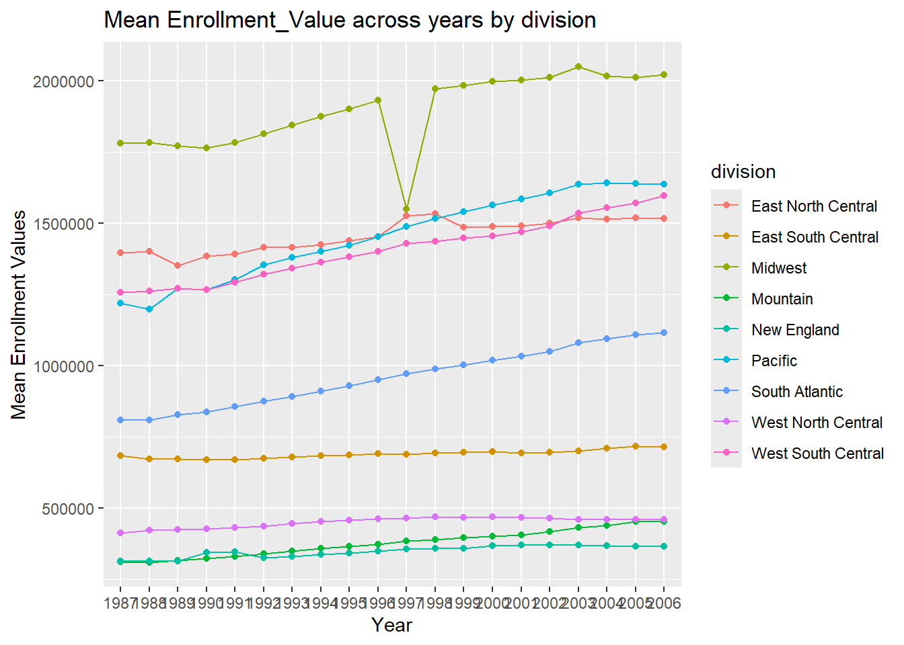
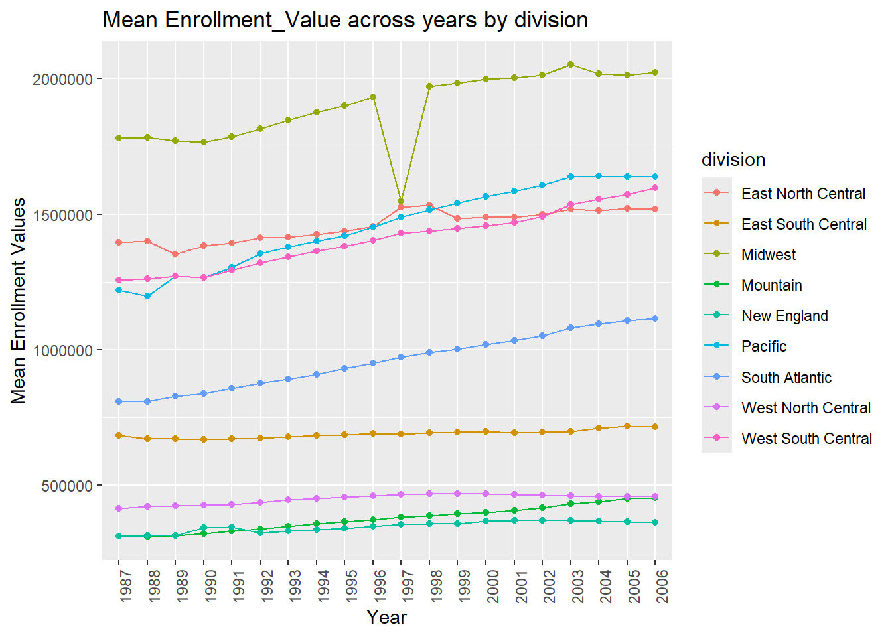
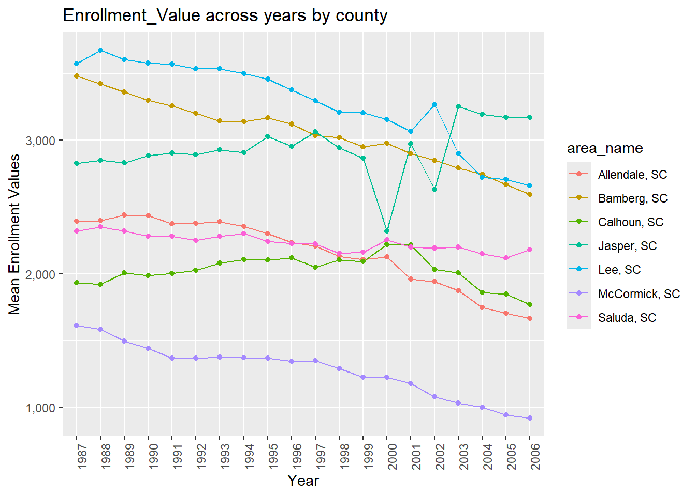
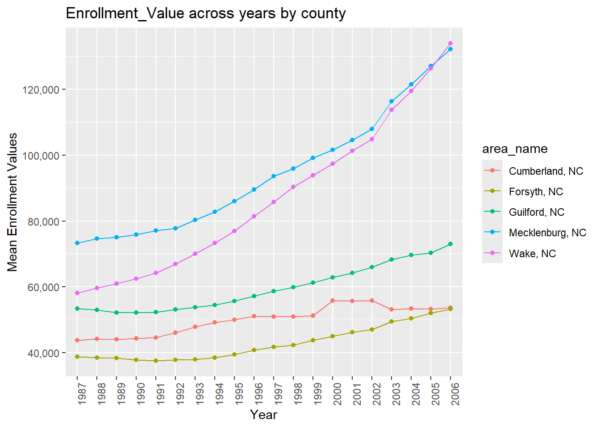
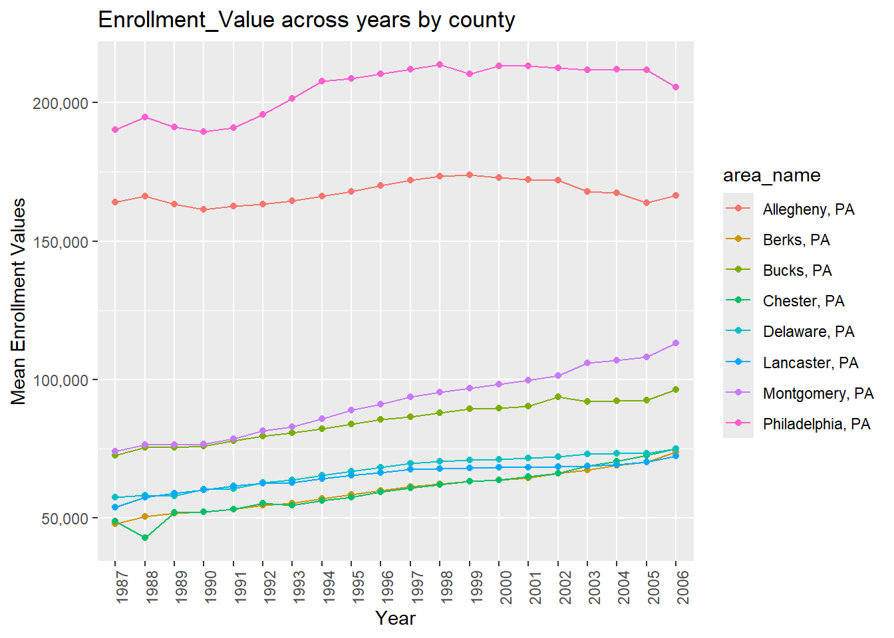
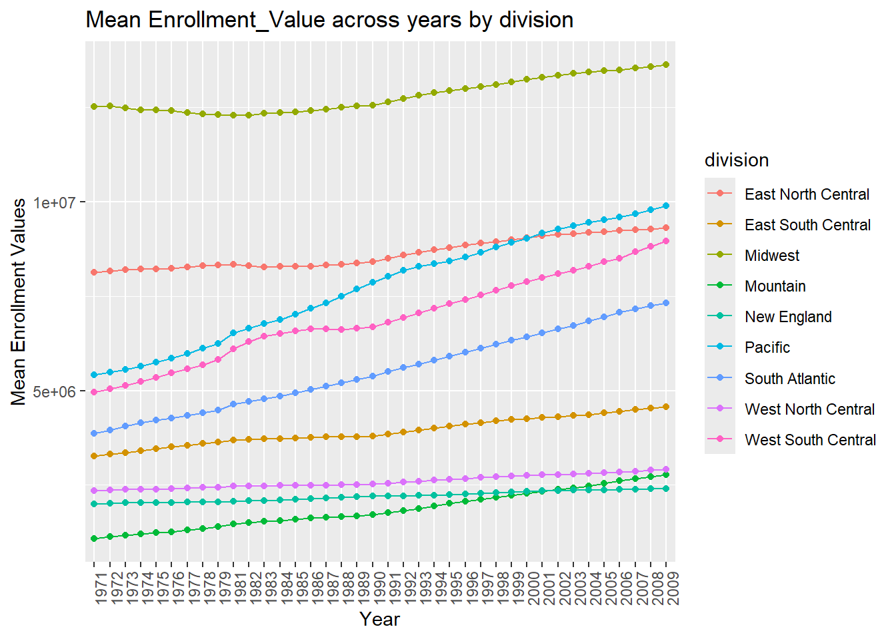
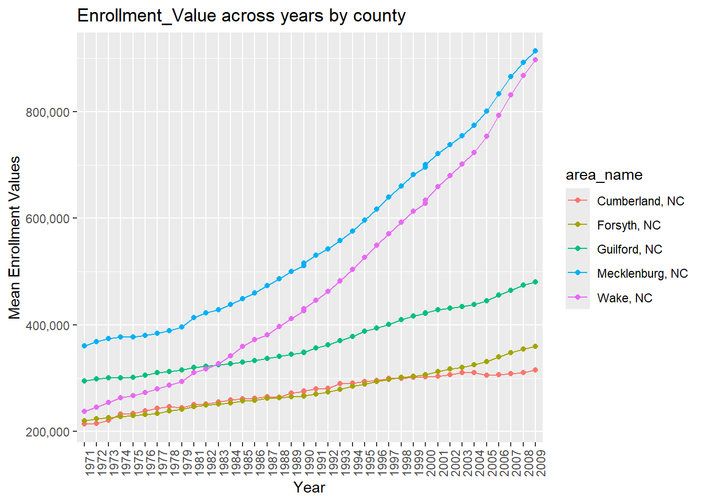
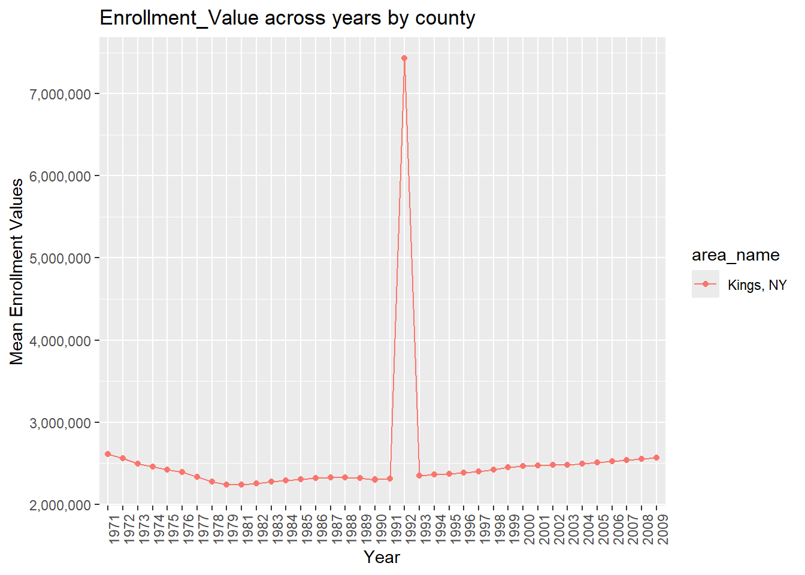

require(tidyverse)
require(rlang)
options(readr.show_col_types = FALSE)Data Manipulation
Data wrangling can present varying degrees of challenges. If you are fortunate, issues present in the data your are working with may be corrected with a single line of Base R code in the console. Data is messy and the task to wrangle it will often require a script of code to prepare it for analysis.
Using data from the Census Bureau’s Statistical Compendia Program, we can massage the data into a format we can work with for analysis using the tidyverse. In the following Data Processing section, the effort to accomplish this task will look manual with a step-by-step demonstration of turning raw data into two tibbles that groups our data geographically using simple tidyverse functions. In the Combining Data Functions section, I will demonstrate an automative approach through nested functions. This will allow for the replication of new datasets without having to recreate a new function each time we require the exact formatting using a similar dataset. Finally I will auto-plot the data in the Putting it all together sections.
Data Processing
We cannot do anything without a dataset. The first order of business is to introduce data to the R environment. The readr package can read in our comma-separated value file and insert it as a tibble using the read_csv. Since we will be working with two similarly-named URLs and datasets, I decided to name the tibble after the file name for organizational purpose. In the next step, I would change the tibble name using best practices.
#Read-in the dataset.
EDU01a <- read_csv("https://www4.stat.ncsu.edu/~online/datasets/EDU01a.csv")With the data read in, I called on it in R to show how the tibble was structured. Observe there are 3,198 row over 42 columns of double-character mixed data. Not all of the columns are useful. The next tidyverse column operation will be to limit to an object the columns that we are interested in. Inside the select operation, there is a renaming of column “Area_name” and call to pull all columns ending in “D” using the ends_with operation.
#1
#Select specific columns of interest from the dataset.
My_EDU01a <- EDU01a |>
select("area_name" = Area_name, STCOU, ends_with("D"))
My_EDU01aThis looks better but it is still difficult to read and work with. I want to collapse all columns ending in “D” into one column called “Item_ID”. We can better manage the tibble with the results of this collapse.
#2
#Convert the section to long formatting.
My_EDU01a <- My_EDU01a |>
pivot_longer(
cols = ends_with("D"),
names_to = "Item_ID",
values_to = "Enrollment_Value")
My_EDU01aEach value in the Item_ID column holds two pieces of information–a measurement type and a year. The first 7 characters corresponds to the measurement type while the last to numerical values represent the year for the measurement. The measure was straight-forward with a substr call to extract the first 7 characters of the Item_ID column. We want our year in a four-number format but the dates overlapped with the new century. This required a case_when approach of making sure all dates that were between 1980 and 1999 inclusive were fit with a “19” prefix; meanwhile, any numbers from 2000 to 2011 inclusive were fit with a “20” prefix. I used some boolean operations to achieve this by look at the date and assigning it the appropriate prefix. Two new columns were created to show the result of both substr calls in the mutate column operation.
#3
#Parse Strings into numeric, survey, and measurement types.
My_EDU01a <- My_EDU01a |>
mutate(year = case_when(
substr(Item_ID, 8, 9) > 24 ~ paste0("19", substr(Item_ID, 8,9)),
substr(Item_ID, 8, 9) <= 24 ~ paste0("20", substr(Item_ID, 8,9))),
measure = substr(Item_ID, 1, 7))Our data can be broken out into two buckets; observations that are county and those that are non-county. I used the filter operation to check each row and assign observations into one of two partitions depending on area_name formating. I added a column for class that we will use later in the visualization section.
# 4 From the parameterized version of the EDU table, I have separated out the two tables by county and non-county.
County.Data <- My_EDU01a |> filter(grepl(", [A-Z][A-Z]", area_name))
NonCounty.Data <- My_EDU01a |> filter(!grepl(", [A-Z][A-Z]", area_name))
# Add a column that identifies the classification of data we are working with.
class(County.Data) <- c("county", class(County.Data))
class(NonCounty.Data) <- c("state", class(NonCounty.Data))
County.Data
NonCounty.DataThe final two steps involve adding a column specific to each tibble. For the tibble capturing county data, I have added a mutate operation which checks the area_name column and extracts the last two letters to the new column. The tibble for state was much more complicated. There exists many divisions that make up areas by state. I approached this using the case_when operation. Rows belonging to particular states where funneled into their appropriate divisions. If the area name did not contain the name of the state the new column value would be assigned “Error”.
# Create column in the County dataset that returns State
County.Data <- County.Data |> mutate(state = substr(area_name, nchar(area_name) - 1, nchar(area_name)))
# Create column in the NonCounty dataset that returns division conditionally
NonCounty.Data <- NonCounty.Data |> mutate(division = case_when(
area_name %in% c("CONNECTICUT","MAINE","MASSACHUSETTS","NEW HAMPSHIRE","RHODE ISLAND","VERMONT") ~ "New England",
area_name %in% c("NEW JERSEY","NEW YORK","PENNSYLVANIA") ~ "Midwest",
area_name %in% c("ILLINOIS","INDIANA","MICHIGAN","OHIO","WISCONSIN") ~ "East North Central",
area_name %in% c("IOWA","KANSAS","MINNESOTA","MISSOURI","NEBRASKA","NORTH DAKOTA","SOUTH DAKOTA") ~ "West North Central",
area_name %in% c("DELAWARE","FLORIDA","GEORGIA","MARYLAND","NORTH CAROLINA","SOUTH CAROLINA","VIRGINIA","WASHINGTON, D.C.","WEST VIRGINIA") ~ "South Atlantic",
area_name %in% c("ALABAMA","KENTUCKY","MISSISSIPPI","TENNESSEE") ~ "East South Central",
area_name %in% c("ARKANSAS","LOUISIANA","OKLAHOMA","TEXAS") ~ "West South Central",
area_name %in% c("ARIZONA","COLORADO","IDAHO","MONTANA","NEVADA","NEW MEXICO","UTAH","WYOMING") ~ "Mountain",
area_name %in% c("ALASKA","CALIFORNIA","HAWAII","OREGON","WASHINGTON") ~ "Pacific",
TRUE ~ "ERROR"
))
County.Data
NonCounty.DataCombining Data Functions
Instead of running each individual code chunk, we could create a function
# First Function performs steps 1 and 2 in earlier example.
MyFunct0102 <- function(dataset_select_pivot, Enrollment_Values = Enrollment_Values) {
dataset_select_pivot %>%
select("area_name" = Area_name, STCOU, ends_with("D")) %>%
pivot_longer(
cols = ends_with("D"),
names_to = "Item_ID",
values_to = "Enrollment_Value")
}
# Second Function performs step 3 in earlier example.
MyFunct03 <- function(dataset_mutate) {
dataset_mutate %>%
mutate(year = case_when(
substr(Item_ID, 8, 9) > 24 ~ paste0("19", substr(Item_ID, 8,9)),
substr(Item_ID, 8, 9) <= 24 ~ paste0("20", substr(Item_ID, 8,9))),
measure = substr(Item_ID, 1, 7))
}
##Step 5--Add state abbreviations to County Data
MyFunct05 <- function(County_Data_Mutate){
County_Data <- County_Data_Mutate |> mutate(state = substr(area_name, nchar(area_name) - 1, nchar(area_name)))
}
#Step 6--Add Divisional descriptors to the NonCounty Data
MyFunct06 <- function(NonCounty_Data_Mutate){
NonCounty_Data <- NonCounty_Data_Mutate |> mutate(division = case_when(
area_name %in% c("CONNECTICUT","MAINE","MASSACHUSETTS","NEW HAMPSHIRE","RHODE ISLAND","VERMONT") ~ "New England",
area_name %in% c("NEW JERSEY","NEW YORK","PENNSYLVANIA") ~ "Midwest",
area_name %in% c("ILLINOIS","INDIANA","MICHIGAN","OHIO","WISCONSIN") ~ "East North Central",
area_name %in% c("IOWA","KANSAS","MINNESOTA","MISSOURI","NEBRASKA","NORTH DAKOTA","SOUTH DAKOTA") ~ "West North Central",
area_name %in% c("DELAWARE","FLORIDA","GEORGIA","MARYLAND","NORTH CAROLINA","SOUTH CAROLINA","VIRGINIA","WASHINGTON, D.C.","WEST VIRGINIA") ~ "South Atlantic",
area_name %in% c("ALABAMA","KENTUCKY","MISSISSIPPI","TENNESSEE") ~ "East South Central",
area_name %in% c("ARKANSAS","LOUISIANA","OKLAHOMA","TEXAS") ~ "West South Central",
area_name %in% c("ARIZONA","COLORADO","IDAHO","MONTANA","NEVADA","NEW MEXICO","UTAH","WYOMING") ~ "Mountain",
area_name %in% c("ALASKA","CALIFORNIA","HAWAII","OREGON","WASHINGTON") ~ "Pacific",
TRUE ~ "ERROR"))
}
# Third Function that performs steps 4 in the earlier example. This one also calls MyFunct05 and MyFunct06
#MyFunct04 <- function(dataset_partition) {
MyFunct04 <- function(dataset_partition) {
#Step 4--Seperate the data into its two parts--County and NonCounty
County_Data <- dataset_partition |> filter(grepl(", [A-Z][A-Z]", area_name))
NonCounty_Data <- dataset_partition |> filter(!grepl(", [A-Z][A-Z]", area_name))
#Function Call for CountyData
County_Data <- MyFunct05(County_Data)
class(County_Data) <- c("county", class(County_Data))
#Function Call for NonCountyData
NonCounty_Data <- MyFunct06(NonCounty_Data)
class(NonCounty_Data) <- c("state", class(NonCounty_Data))
return(list(County_Data = County_Data, NonCounty_Data = NonCounty_Data))
}
#The Wrapper Function
Split_Data_Along_Geography <- function(url, Enrollment_Value = "Enrollment_Value") {
if (!str_ends(url, ".csv")) {
stop("Invalid URL format. Please provide a valid URL ending in '.csv") #Check satisfying conditions for running the function.
}
result <- as_tibble(read_csv(url)) %>% #Reads in data.
MyFunct0102 %>% #Selects/Pivots Data
MyFunct03 %>% #Creates new columns for measuring and date=year
MyFunct04 #Performs the split, mutate and class call on the dataset
}# Call it and Combine your Data. Testing to see if the URLs produce the intended outcome so far.
result_a <- Split_Data_Along_Geography("https://www4.stat.ncsu.edu/~online/datasets/EDU01a.csv", Enrollment_Value)
result_b <- Split_Data_Along_Geography("https://www4.stat.ncsu.edu/~online/datasets/EDU01b.csv", Enrollment_Value)# This function automates the step above, taking the results of two or more URLs and producing a list of combined Tibbles seperated by County and NonCounty.
combine_results <- function(...) {
results <- list(...)
combined_county <- results %>%
purrr::map(~ .x$County_Data) %>%
purrr::reduce(dplyr::bind_rows)
combined_NonCounty <- results %>%
purrr::map(~ .x$NonCounty_Data) %>%
purrr::reduce(dplyr::bind_rows)
return(list(combined_county, combined_NonCounty))
}Generic Functions
#Plotting for our state data
plot.state <- function(df.state, var_name = "Enrollment_Value") {
# Filter out rows where Division is "ERROR" and compute mean enrollment of the input var_name, all by division and year.
df_filtered <- df.state %>%
filter(division != "ERROR") %>%
group_by(division, year) %>%
summarize(mean_enrollment = mean(get(var_name), na.rm = TRUE))
# Plot the input
ggplot(df_filtered, aes(x = year, y = mean_enrollment, color = division))+
geom_line(aes(group = division)) +
geom_point() +
labs(x = "Year", y = "Mean Enrollment Values") +
ggtitle(paste("Mean", var_name, "across years by division")) +
theme(axis.text.x = element_text(angle = 90))
}plot.county <- function(data, state = "NC", var_name = "Enrollment_Value", top_or_bottom = "top", n = 5) {
# Filter the data to only include data from the specified state
state_data <- data %>% filter(state == !!state)
# Calculate the overall mean of the specified statistic for each area_name
mean_data <- state_data %>%
group_by(area_name) %>%
summarise(mean_value = mean(get(var_name), na.rm = TRUE))
# Sort the mean values from largest to smallest if 'top' is specified, or smallest to largest if 'bottom' is specified
if (top_or_bottom == "top") {
sorted_data <- mean_data %>% arrange(desc(mean_value))
} else {
sorted_data <- mean_data %>% arrange(mean_value)
}
## Obtain the top or bottom n area_names
selected_areas <- sorted_data %>% slice_head(n = n) %>% pull(area_name)
# Filter the original data to only include the selected area_names
plot_data <- state_data %>% filter(area_name %in% selected_areas)
ggplot(plot_data, aes(x = year, y = get(var_name), color = area_name)) +
geom_line(aes(group = area_name)) +
geom_point() +
labs(x = "Year", y = "Mean Enrollment Values") +
ggtitle(paste(var_name, "across years by county")) +
scale_y_continuous(labels = scales::comma) +
theme(axis.text.x = element_text(angle = 90))
}
#plot.county(Frames_Joined_On_Geo[[1]], state = "FL", var_name = "Enrollment_Value", top_or_bottom = "top", n = 9)Putting it all together
Run your data processing function on the two enrollment URLs given previously, specifying an appropriate name for the enrollment data column.
#READ: EDU01a.csv file.
EDU01a <- read_csv("https://www4.stat.ncsu.edu/~online/datasets/EDU01a.csv")
#Combine Step one, step two and step three into one task.
My_EDU01a <- EDU01a |>
select("area_name" = Area_name, STCOU, ends_with("D")) |>
pivot_longer(
cols = ends_with("D"),
names_to = "Item_ID",
values_to = "Enrollment_Value") |> #Specification of the enrollment values data column
mutate(year = case_when(
substr(Item_ID, 8, 9) > 24 ~ paste0("19", substr(Item_ID, 8,9)),
substr(Item_ID, 8, 9) <= 24 ~ paste0("20", substr(Item_ID, 8,9))),
measure = substr(Item_ID, 1, 7))
#Assigned data based on area_name column values.
County.Data <- My_EDU01a |> filter(grepl(", [A-Z][A-Z]", area_name))
NonCounty.Data <- My_EDU01a |> filter(!grepl(", [A-Z][A-Z]", area_name))
#Add a column that identifies the classification of data we are working with.
class(County.Data) <- c("county", class(County.Data))
class(NonCounty.Data) <- c("state", class(NonCounty.Data))
#Create column with state abbreviation
County.Data <- County.Data |> mutate(state = substr(area_name, nchar(area_name) - 1, nchar(area_name)))
#Create column in the NonCounty dataset that returns division conditionally
NonCounty.Data <- NonCounty.Data |> mutate(division = case_when(
area_name %in% c("CONNECTICUT","MAINE","MASSACHUSETTS","NEW HAMPSHIRE","RHODE ISLAND","VERMONT") ~ "New England",
area_name %in% c("NEW JERSEY","NEW YORK","PENNSYLVANIA") ~ "Midwest",
area_name %in% c("ILLINOIS","INDIANA","MICHIGAN","OHIO","WISCONSIN") ~ "East North Central",
area_name %in% c("IOWA","KANSAS","MINNESOTA","MISSOURI","NEBRASKA","NORTH DAKOTA","SOUTH DAKOTA") ~ "West North Central",
area_name %in% c("DELAWARE","FLORIDA","GEORGIA","MARYLAND","NORTH CAROLINA","SOUTH CAROLINA","VIRGINIA","WASHINGTON, D.C.","WEST VIRGINIA") ~ "South Atlantic",
area_name %in% c("ALABAMA","KENTUCKY","MISSISSIPPI","TENNESSEE") ~ "East South Central",
area_name %in% c("ARKANSAS","LOUISIANA","OKLAHOMA","TEXAS") ~ "West South Central",
area_name %in% c("ARIZONA","COLORADO","IDAHO","MONTANA","NEVADA","NEW MEXICO","UTAH","WYOMING") ~ "Mountain",
area_name %in% c("ALASKA","CALIFORNIA","HAWAII","OREGON","WASHINGTON") ~ "Pacific",
TRUE ~ "ERROR"
))
County.Data# A tibble: 31,450 × 7
area_name STCOU Item_ID Enrollment_Value year measure state
<chr> <chr> <chr> <dbl> <chr> <chr> <chr>
1 Autauga, AL 01001 EDU010187D 6829 1987 EDU0101 AL
2 Autauga, AL 01001 EDU010188D 6900 1988 EDU0101 AL
3 Autauga, AL 01001 EDU010189D 6920 1989 EDU0101 AL
4 Autauga, AL 01001 EDU010190D 6847 1990 EDU0101 AL
5 Autauga, AL 01001 EDU010191D 7008 1991 EDU0101 AL
6 Autauga, AL 01001 EDU010192D 7137 1992 EDU0101 AL
7 Autauga, AL 01001 EDU010193D 7152 1993 EDU0101 AL
8 Autauga, AL 01001 EDU010194D 7381 1994 EDU0101 AL
9 Autauga, AL 01001 EDU010195D 7568 1995 EDU0101 AL
10 Autauga, AL 01001 EDU010196D 7834 1996 EDU0101 AL
# ℹ 31,440 more rowsNonCounty.Data# A tibble: 530 × 7
area_name STCOU Item_ID Enrollment_Value year measure division
<chr> <chr> <chr> <dbl> <chr> <chr> <chr>
1 UNITED STATES 00000 EDU010187D 40024299 1987 EDU0101 ERROR
2 UNITED STATES 00000 EDU010188D 39967624 1988 EDU0101 ERROR
3 UNITED STATES 00000 EDU010189D 40317775 1989 EDU0101 ERROR
4 UNITED STATES 00000 EDU010190D 40737600 1990 EDU0101 ERROR
5 UNITED STATES 00000 EDU010191D 41385442 1991 EDU0101 ERROR
6 UNITED STATES 00000 EDU010192D 42088151 1992 EDU0101 ERROR
7 UNITED STATES 00000 EDU010193D 42724710 1993 EDU0101 ERROR
8 UNITED STATES 00000 EDU010194D 43369917 1994 EDU0101 ERROR
9 UNITED STATES 00000 EDU010195D 43993459 1995 EDU0101 ERROR
10 UNITED STATES 00000 EDU010196D 44715737 1996 EDU0101 ERROR
# ℹ 520 more rows#READ: EDU01b.csv file.
EDU01b <- read_csv("https://www4.stat.ncsu.edu/~online/datasets/EDU01b.csv")
#Combine Step one, step two and step three into one task.
My_EDU01b <- EDU01b |>
select("area_name" = Area_name, STCOU, ends_with("D")) |>
pivot_longer(
cols = ends_with("D"),
names_to = "Item_ID",
values_to = "Enrollment_Value") |> #Specification of the enrollment values data column
mutate(year = case_when(
substr(Item_ID, 8, 9) > 24 ~ paste0("19", substr(Item_ID, 8,9)),
substr(Item_ID, 8, 9) <= 24 ~ paste0("20", substr(Item_ID, 8,9))),
measure = substr(Item_ID, 1, 7))
#Assigned data based on area_name column values.
County.Data <- My_EDU01b |> filter(grepl(", [A-Z][A-Z]", area_name))
NonCounty.Data <- My_EDU01b |> filter(!grepl(", [A-Z][A-Z]", area_name))
#Add a column that identifies the classification of data we are working with.
class(County.Data) <- c("county", class(County.Data))
class(NonCounty.Data) <- c("state", class(NonCounty.Data))
#Create column with state abbreviation
County.Data <- County.Data |> mutate(state = substr(area_name, nchar(area_name) - 1, nchar(area_name)))
#Create column in the NonCounty dataset that returns division conditionally
NonCounty.Data <- NonCounty.Data |> mutate(division = case_when(
area_name %in% c("CONNECTICUT","MAINE","MASSACHUSETTS","NEW HAMPSHIRE","RHODE ISLAND","VERMONT") ~ "New England",
area_name %in% c("NEW JERSEY","NEW YORK","PENNSYLVANIA") ~ "Midwest",
area_name %in% c("ILLINOIS","INDIANA","MICHIGAN","OHIO","WISCONSIN") ~ "East North Central",
area_name %in% c("IOWA","KANSAS","MINNESOTA","MISSOURI","NEBRASKA","NORTH DAKOTA","SOUTH DAKOTA") ~ "West North Central",
area_name %in% c("DELAWARE","FLORIDA","GEORGIA","MARYLAND","NORTH CAROLINA","SOUTH CAROLINA","VIRGINIA","WASHINGTON, D.C.","WEST VIRGINIA") ~ "South Atlantic",
area_name %in% c("ALABAMA","KENTUCKY","MISSISSIPPI","TENNESSEE") ~ "East South Central",
area_name %in% c("ARKANSAS","LOUISIANA","OKLAHOMA","TEXAS") ~ "West South Central",
area_name %in% c("ARIZONA","COLORADO","IDAHO","MONTANA","NEVADA","NEW MEXICO","UTAH","WYOMING") ~ "Mountain",
area_name %in% c("ALASKA","CALIFORNIA","HAWAII","OREGON","WASHINGTON") ~ "Pacific",
TRUE ~ "ERROR"
))
County.Data# A tibble: 31,450 × 7
area_name STCOU Item_ID Enrollment_Value year measure state
<chr> <chr> <chr> <dbl> <chr> <chr> <chr>
1 Autauga, AL 01001 EDU010197D 8099 1997 EDU0101 AL
2 Autauga, AL 01001 EDU010198D 8211 1998 EDU0101 AL
3 Autauga, AL 01001 EDU010199D 8489 1999 EDU0101 AL
4 Autauga, AL 01001 EDU010200D 8912 2000 EDU0102 AL
5 Autauga, AL 01001 EDU010201D 8626 2001 EDU0102 AL
6 Autauga, AL 01001 EDU010202D 8762 2002 EDU0102 AL
7 Autauga, AL 01001 EDU015203D 9105 2003 EDU0152 AL
8 Autauga, AL 01001 EDU015204D 9200 2004 EDU0152 AL
9 Autauga, AL 01001 EDU015205D 9559 2005 EDU0152 AL
10 Autauga, AL 01001 EDU015206D 9652 2006 EDU0152 AL
# ℹ 31,440 more rowsNonCounty.Data# A tibble: 530 × 7
area_name STCOU Item_ID Enrollment_Value year measure division
<chr> <chr> <chr> <dbl> <chr> <chr> <chr>
1 UNITED STATES 00000 EDU010197D 44534459 1997 EDU0101 ERROR
2 UNITED STATES 00000 EDU010198D 46245814 1998 EDU0101 ERROR
3 UNITED STATES 00000 EDU010199D 46368903 1999 EDU0101 ERROR
4 UNITED STATES 00000 EDU010200D 46818690 2000 EDU0102 ERROR
5 UNITED STATES 00000 EDU010201D 47127066 2001 EDU0102 ERROR
6 UNITED STATES 00000 EDU010202D 47606570 2002 EDU0102 ERROR
7 UNITED STATES 00000 EDU015203D 48506317 2003 EDU0152 ERROR
8 UNITED STATES 00000 EDU015204D 48693287 2004 EDU0152 ERROR
9 UNITED STATES 00000 EDU015205D 48978555 2005 EDU0152 ERROR
10 UNITED STATES 00000 EDU015206D 49140702 2006 EDU0152 ERROR
# ℹ 520 more rowsRun your data combining function to put these into one object (with two data frames)
#Enter URL and variable input into function to assign an object in the environment.
result_a <- Split_Data_Along_Geography("https://www4.stat.ncsu.edu/~online/datasets/EDU01a.csv", Enrollment_Value)
result_b <- Split_Data_Along_Geography("https://www4.stat.ncsu.edu/~online/datasets/EDU01b.csv", Enrollment_Value)
#Combine the resulting lists containing two tibbles such that state combines with state and county combines with county.
joined_results <- combine_results(result_a, result_b)
joined_results[[1]]
# A tibble: 62,900 × 7
area_name STCOU Item_ID Enrollment_Value year measure state
<chr> <chr> <chr> <dbl> <chr> <chr> <chr>
1 Autauga, AL 01001 EDU010187D 6829 1987 EDU0101 AL
2 Autauga, AL 01001 EDU010188D 6900 1988 EDU0101 AL
3 Autauga, AL 01001 EDU010189D 6920 1989 EDU0101 AL
4 Autauga, AL 01001 EDU010190D 6847 1990 EDU0101 AL
5 Autauga, AL 01001 EDU010191D 7008 1991 EDU0101 AL
6 Autauga, AL 01001 EDU010192D 7137 1992 EDU0101 AL
7 Autauga, AL 01001 EDU010193D 7152 1993 EDU0101 AL
8 Autauga, AL 01001 EDU010194D 7381 1994 EDU0101 AL
9 Autauga, AL 01001 EDU010195D 7568 1995 EDU0101 AL
10 Autauga, AL 01001 EDU010196D 7834 1996 EDU0101 AL
# ℹ 62,890 more rows
[[2]]
# A tibble: 1,060 × 7
area_name STCOU Item_ID Enrollment_Value year measure division
<chr> <chr> <chr> <dbl> <chr> <chr> <chr>
1 UNITED STATES 00000 EDU010187D 40024299 1987 EDU0101 ERROR
2 UNITED STATES 00000 EDU010188D 39967624 1988 EDU0101 ERROR
3 UNITED STATES 00000 EDU010189D 40317775 1989 EDU0101 ERROR
4 UNITED STATES 00000 EDU010190D 40737600 1990 EDU0101 ERROR
5 UNITED STATES 00000 EDU010191D 41385442 1991 EDU0101 ERROR
6 UNITED STATES 00000 EDU010192D 42088151 1992 EDU0101 ERROR
7 UNITED STATES 00000 EDU010193D 42724710 1993 EDU0101 ERROR
8 UNITED STATES 00000 EDU010194D 43369917 1994 EDU0101 ERROR
9 UNITED STATES 00000 EDU010195D 43993459 1995 EDU0101 ERROR
10 UNITED STATES 00000 EDU010196D 44715737 1996 EDU0101 ERROR
# ℹ 1,050 more rowsUse the plot function on the state data frame
#Plot state from joined_results list element 2 (the state tibble)
plot.state(joined_results[[2]])
Use the plot function on the county data frame
#Once specifying the state to be “NC”, the group being the top, the number looked at being 20
plot.county(joined_results[[1]],state="NC", top_or_bottom = "top", n = 20, var_name = "Enrollment_Value")
#Once specifying the state to be “SC”, the group being the bottom, the number looked at being 7
plot.county(joined_results[[1]],state="SC", top_or_bottom = "bottom", n = 7, var_name = "Enrollment_Value")
#Once without specifying anything (defaults used)
plot.county(joined_results[[1]])
#Once specifying the state to be “PA”, the group being the top, the number looked at being 8
plot.county(joined_results[[1]],state="PA", top_or_bottom = "top", n = 8, var_name = "Enrollment_Value")
Lastly, read in another couple similar data sets and apply your functions! Run your data processing function on the four data sets at URLs given below: – https://www4.stat.ncsu.edu/~online/datasets/PST01a.csv – https://www4.stat.ncsu.edu/~online/datasets/PST01b.csv – https://www4.stat.ncsu.edu/~online/datasets/PST01c.csv – https://www4.stat.ncsu.edu/~online/datasets/PST01d.csv
result_a <- Split_Data_Along_Geography("https://www4.stat.ncsu.edu/~online/datasets/PST01a.csv", Enrollment_Value)
result_b <- Split_Data_Along_Geography("https://www4.stat.ncsu.edu/~online/datasets/PST01b.csv", Enrollment_Value)
result_c <- Split_Data_Along_Geography("https://www4.stat.ncsu.edu/~online/datasets/PST01c.csv", Enrollment_Value)
result_d <- Split_Data_Along_Geography("https://www4.stat.ncsu.edu/~online/datasets/PST01d.csv", Enrollment_Value)Run your data combining function (probably three times) to put these into one object (with two data frames)
Four_Frames_Joined_On_Geo <- combine_results(result_a, result_b, result_c, result_d)
Four_Frames_Joined_On_Geo[[1]]
# A tibble: 125,800 × 7
area_name STCOU Item_ID Enrollment_Value year measure state
<chr> <chr> <chr> <dbl> <chr> <chr> <chr>
1 Autauga, AL 01001 PST015171D 25508 1971 PST0151 AL
2 Autauga, AL 01001 PST015172D 27166 1972 PST0151 AL
3 Autauga, AL 01001 PST015173D 28463 1973 PST0151 AL
4 Autauga, AL 01001 PST015174D 29266 1974 PST0151 AL
5 Autauga, AL 01001 PST015175D 29718 1975 PST0151 AL
6 Autauga, AL 01001 PST015176D 29896 1976 PST0151 AL
7 Autauga, AL 01001 PST015177D 30462 1977 PST0151 AL
8 Autauga, AL 01001 PST015178D 30882 1978 PST0151 AL
9 Autauga, AL 01001 PST015179D 32055 1979 PST0151 AL
10 Autauga, AL 01001 PST025181D 31985 1981 PST0251 AL
# ℹ 125,790 more rows
[[2]]
# A tibble: 2,120 × 7
area_name STCOU Item_ID Enrollment_Value year measure division
<chr> <chr> <chr> <dbl> <chr> <chr> <chr>
1 UNITED STATES 00000 PST015171D 206827028 1971 PST0151 ERROR
2 UNITED STATES 00000 PST015172D 209283904 1972 PST0151 ERROR
3 UNITED STATES 00000 PST015173D 211357490 1973 PST0151 ERROR
4 UNITED STATES 00000 PST015174D 213341552 1974 PST0151 ERROR
5 UNITED STATES 00000 PST015175D 215465246 1975 PST0151 ERROR
6 UNITED STATES 00000 PST015176D 217562728 1976 PST0151 ERROR
7 UNITED STATES 00000 PST015177D 219759860 1977 PST0151 ERROR
8 UNITED STATES 00000 PST015178D 222095080 1978 PST0151 ERROR
9 UNITED STATES 00000 PST015179D 224567234 1979 PST0151 ERROR
10 UNITED STATES 00000 PST025181D 229466391 1981 PST0251 ERROR
# ℹ 2,110 more rowsUse the plot function on the state data frame
plot.state(Four_Frames_Joined_On_Geo[[2]])
Use the plot function on the county data frame
#Once specifying the state to be “CA”, the group being the top, the number looked at being 15
plot.county(Four_Frames_Joined_On_Geo[[1]],state = "CA", top_or_bottom = "top", n = 15, var_name = "Enrollment_Value")#Once specifying the state to be “TX”, the group being the top, the number looked at being 4
plot.county(Four_Frames_Joined_On_Geo[[1]],state = "TX", top_or_bottom = "top", n = 4, var_name = "Enrollment_Value")
#Once without specifying anything (defaults used)
plot.county(Four_Frames_Joined_On_Geo[[1]])
#Once specifying the state to be “NY”, the group being the top, the number looked at being 1
plot.county(Four_Frames_Joined_On_Geo[[1]],state = "NY", top_or_bottom = "top", n = 1, var_name = "Enrollment_Value")